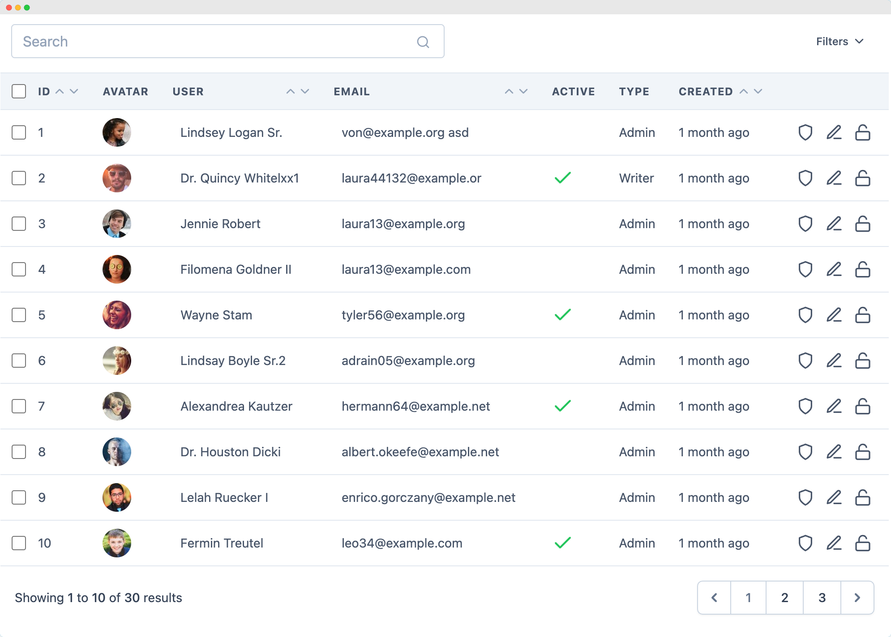

Vistas
En la arquitectura MVC, las Vistas son el componente responsable de la capa de presentación. Su único trabajo es mostrar la información que le pasa el Controlador de una forma visualmente atractiva para el usuario, generalmente como un documento HTML. En Laravel, las Vistas se almacenan en el directorio resources/views y utilizan una sintaxis especial gracias al motor de plantillas integrado: Blade.

Blade es un motor de plantillas potente pero simple. A diferencia de otros, no introduce una sobrecarga de rendimiento en tu aplicación, ya que todas las plantillas de Blade se compilan en código PHP plano y se cachean hasta que son modificadas. Esto nos da lo mejor de dos mundos: una sintaxis limpia y expresiva para nuestras vistas, y el rendimiento del PHP nativo.
Los ficheros de Blade utilizan la extensión .blade.php. Esto le indica a Laravel que debe procesar el fichero con el motor de Blade antes de devolverlo como una respuesta.
Devolver una Vista
Desde un controlador o una ruta, la función view() es el principal puente para comunicarse con la capa de presentación. Esta función global de Laravel se encarga de localizar, compilar y renderizar una plantilla de Blade, devolviéndola como una respuesta HTTP. Su funcionamiento es simple pero muy potente.
La función busca los ficheros de las vistas exclusivamente dentro del directorio resources/views. Para organizar proyectos grandes, es una práctica común crear subdirectorios dentro de esta carpeta (p. ej., resources/views/admin/users). Para acceder a estas vistas anidadas, Laravel utiliza una notación de puntos (.) que reemplaza a las barras de directorio (/). De esta forma, para devolver la vista que se encuentra en resources/views/admin/users/index.blade.php, simplemente llamaríamos a view('admin.users.index').
El segundo y más importante argumento de la función view() es un array asociativo opcional que contiene los datos que queremos que estén disponibles dentro de la vista. Las claves de este array se convierten en variables dentro del fichero Blade. Veamos un ejemplo con un controlador:
<?php
// En routes/web.php
Route::get('/usuario', function () {
// Esto devolverá el fichero en resources/views/perfil/usuario.blade.php
return view('perfil.usuario', ['nombre' => 'Ana']);
});
?>
Mostrar datos
La directiva más fundamental y utilizada en Blade es la de mostrar datos. Para imprimir el contenido de una variable o el resultado de una función de PHP, simplemente lo envolvemos en una sintaxis de dobles llaves: {{ }}. Esta sintaxis es un atajo limpio y seguro para la engorrosa instrucción <?php echo ...; ?>.
Veamos un ejemplo, el siguiente controlador devuelve una vista con el nombre de usuario Juan Perez:
<?php
// En un Controlador
$nombre_usuario = "Juan Pérez";
return view('bienvenida', ['nombre' => $nombre_usuario]);
?>
Ahora, en nuestra plantilla Blade, podemos incluir esta variable con la directiva indicada y mostrar su contenido:
La verdadera potencia de la sintaxis {{ }} no reside en su brevedad, sino en su seguridad. Por defecto, Laravel pasa automáticamente todo el contenido que se imprime a través de esta directiva por la función htmlspecialchars() de PHP.
Esto es una medida de seguridad crucial para prevenir ataques de Cross-Site Scripting (XSS). Un ataque XSS ocurre cuando un usuario malicioso introduce código JavaScript en un campo de un formulario (por ejemplo, en un comentario) y la aplicación lo guarda y luego lo muestra a otros usuarios sin filtrarlo. Si no se filtra, ese código JavaScript se ejecutará en el navegador de las víctimas.
La directiva {{ }} neutraliza este riesgo al "escapar" los caracteres HTML. Por ejemplo, el código malicioso <script>alert('hack');</script> se convertiría en el texto inofensivo <script>alert('hack');</script>, que el navegador mostrará como texto en lugar de ejecutarlo.
$html_guardado = '<p>Este es un <strong>texto en negrita</strong>.</p>';
// Esto imprimiría el HTML como texto plano: <p>Este es un <strong>...
{{ $html_guardado }}
// Esto renderizará el HTML correctamente en el navegador.
{!! $html_guardado !!}
Advertencia de seguridad
Utiliza la sintaxis {!! !!} con extremo cuidado y únicamente con datos que provengan de una fuente de confianza o que hayas saneado explícitamente. Permitir que los usuarios envíen contenido que luego se renderiza con {!! !!} es una puerta abierta a vulnerabilidades de seguridad XSS.
Por último, hay que destacar que la sintaxis de Blade también es lo suficientemente inteligente como para permitir el uso de operadores de PHP, como el operador de fusión de null (??), para proporcionar valores por defecto de forma muy limpia.
Estructuras de Control
Blade no solo simplifica la forma en que mostramos datos, sino que también ofrece un conjunto de directivas muy limpias y expresivas para las estructuras de control que normalmente usamos en PHP. Esto permite que nuestras plantillas mantengan una alta legibilidad, separando la lógica de presentación del HTML de una forma mucho más elegante que con la sintaxis tradicional de <?php ... ?>.
@if ($usuario->tienePedidos())
<p>El usuario ha realizado pedidos.</p>
@elseif ($usuario->esNuevo())
<p>Este es un usuario nuevo sin pedidos.</p>
@else
<p>El usuario no tiene pedidos.</p>
@endif
Para mayor legibilidad, Blade también ofrece la directiva @unless, que es el equivalente a if (!...).
Además, para comprobar si una variable existe o está vacía, podemos usar @isset y @empty, que son atajos para las funciones isset() y empty() de PHP.
@isset($mensajeDeExito)
<div class="alerta-exito">{{ $mensajeDeExito }}</div>
@endisset
@empty($posts)
<p>No hay artículos para mostrar.</p>
@endempty
Bucles
Los bucles son esenciales para mostrar colecciones de datos, como una lista de productos o artículos. La directiva más común es @foreach.
<ul>
@foreach ($articulos as $articulo)
<li>
<h3>{{ $articulo->titulo }}</h3>
<p>Publicado el: {{ $articulo->fecha_publicacion }}</p>
</li>
@endforeach
</ul>
Además, Blade mejora los bucles con la directiva @forelse. Esta directiva es una combinación de un if y un foreach: ejecuta el bucle si la colección tiene elementos, pero muestra un bloque alternativo (@empty) si la colección está vacía. Esto simplifica enormemente un patrón muy común.
<ul>
@forelse ($articulos as $articulo)
<li>{{ $articulo->titulo }}</li>
@empty
<li>No se encontraron artículos.</li>
@endforelse
</ul>
Ten en cuenta que dentro de cualquier bucle de Blade, tienes acceso a una variable $loop que proporciona información útil sobre la iteración actual, como si es el primer o el último elemento, el índice actual, etc.
@foreach ($usuarios as $usuario)
<div class="@if ($loop->first) primer-elemento @endif">
<p>{{ $loop->iteration }}: {{ $usuario->nombre }}</p>
</div>
@endforeach
La Magia de los Layouts: Herencia de Plantillas
La característica más potente y que más agiliza el trabajo en Blade es, sin duda, la herencia de plantillas. Este mecanismo nos permite mantener nuestro código DRY (Don't Repeat Yourself - No te repitas), resolviendo uno de los problemas más tediosos del desarrollo web: la duplicación de la estructura HTML en cada página. En lugar de copiar y pegar la misma cabecera, barra de navegación y pie de página en todos nuestros ficheros, podemos crear una única "plantilla maestra" o layout que defina el esqueleto común, y luego hacer que las vistas específicas de cada página "hereden" de ella, aportando únicamente su contenido particular.
Este sistema se basa en la colaboración de tres directivas principales: @extends, @yield y @section.
Crear el Layout Maestro (El Esqueleto)
El primer paso es crear un fichero que actúe como nuestra plantilla base. Este fichero, que por convención suele ubicarse en resources/views/layouts/app.blade.php, contiene toda la estructura HTML que se repetirá en nuestro sitio.
La clave de este fichero es la directiva @yield('nombre_seccion'). Esta directiva define un "hueco" o un espacio reservado que será rellenado por las vistas hijas. Podemos tener tantos @yield como necesitemos para diferentes partes de la página.
<!DOCTYPE html>
<html lang="es">
<head>
<meta charset="UTF-8">
<title>Mi Aplicación - @yield('titulo')</title>
</head>
<body>
<header class="main-header">
<h1>Mi Aplicación Web</h1>
<nav>
<a href="/">Inicio</a>
<a href="/acerca-de">Sobre Nosotros</a>
</nav>
</header>
<main class="container">
@yield('content')
</main>
<footer class="main-footer">
<p>© <?php echo date('Y'); ?> Mi Aplicación Web</p>
</footer>
</body>
</html>
En este layout, hemos definido dos "huecos": uno para el titulo de la página y otro, más grande, para el content principal.
Crear una Vista Hija (El Contenido Específico)
Ahora, para crear una página específica como la de inicio, no necesitamos volver a escribir todo el HTML. Simplemente creamos un nuevo fichero de vista que herede del layout y defina el contenido para los "huecos".
Para construir una vista hija, la primera y más importante instrucción debe ser la directiva @extends('layouts.app'). Esta línea, colocada al inicio del fichero, establece la relación de herencia, indicándole a Blade que esta vista utilizará la estructura definida en la plantilla maestra.
Una vez establecida la herencia, el resto del fichero se dedica a proveer el contenido para los "huecos" o secciones definidas en el padre. Para ello, se utiliza la directiva @section, que tiene dos formas. Para contenido simple y de una sola línea, como el título de una página, se puede usar una sintaxis concisa: @section('nombre_seccion', 'valor').
Para definir bloques de contenido más grandes y complejos, como el cuerpo principal de la página con múltiples etiquetas HTML, se utiliza la sintaxis de bloque, que se abre con @section('nombre_seccion') y se cierra con @endsection.
{{-- Esta vista extiende el layout principal --}}
@extends('layouts.app')
{{-- Define el contenido para la sección 'titulo' del layout --}}
@section('titulo', 'Página de Inicio')
{{-- Define el contenido para la sección 'content' del layout --}}
@section('content')
<h2>Contenido de la Página de Inicio</h2>
<p>¡Bienvenido a nuestra increíble aplicación!</p>
<p>Este es el contenido específico de la página de inicio. La cabecera y el pie de página vienen de la plantilla maestra.</p>
@endsection
Cuando un controlador devuelve view('inicio'), Laravel no renderiza inicio.blade.php directamente. Ve la directiva @extends, por lo que primero carga el fichero layouts/app.blade.php. Luego, recorre el layout y, cada vez que encuentra una directiva @yield, busca una @section con el mismo nombre en la vista hija (inicio.blade.php) e inyecta su contenido. El resultado es un único fichero HTML completo, ensamblado a partir del padre y del hijo, sin haber duplicado ni una sola línea de la estructura principal. Este mecanismo hace que modificar el diseño de todo un sitio web sea tan fácil como editar un único fichero.
Incluyendo Ficheros CSS y JavaScript
Una vez que hemos definido la estructura de nuestras páginas con las plantillas de Blade, el siguiente paso es darles vida con estilos visuales e interactividad. Para ello, recurrimos a los dos pilares fundamentales del desarrollo frontend: CSS para la presentación (colores, fuentes, maquetación) y JavaScript para el comportamiento (animaciones, validaciones, etc.).
Laravel, como framework moderno, ofrece herramientas y convenciones específicas para gestionar estos ficheros, conocidos como "assets", de una manera organizada y optimizada. En esta sección, veremos los métodos correctos para enlazar nuestras hojas de estilo y scripts, asegurando que nuestra aplicación no solo funcione bien, sino que también sea fácil de mantener.
El Método Clásico (Ficheros en la Carpeta public)
Este método es el más sencillo y se utiliza para ficheros CSS y JavaScript que no necesitan ningún tipo de procesamiento o compilación.
Cualquier fichero que deba ser accesible públicamente desde el navegador (CSS, JS, imágenes, etc.) debe estar dentro de la carpeta public de tu proyecto Laravel. Es una buena práctica crear subdirectorios, como public/css y public/js, para mantener todo organizado.
Una vez creados, para enlazar estos ficheros en tus vistas de Blade, nunca debes escribir la ruta de forma manual (p. ej., <link href="/css/style.css">). En su lugar, debes usar la función asset() de Laravel.
La función asset() genera una URL completa y correcta a un fichero dentro de la carpeta public, sin importar si tu aplicación se está ejecutando en el dominio raíz o en un subdirectorio.
<!DOCTYPE html>
<html lang="es">
<head>
<meta charset="UTF-8">
<title>Mi App</title>
<link href="{{ asset('css/style.css') }}" rel="stylesheet">
</head>
<body>
@yield('content')
<script src="{{ asset('js/main.js') }}"></script>
</body>
</html>
El Método Moderno (Compilación de Assets con Vite)
El flujo de trabajo recomendado para la gestión de assets en las aplicaciones modernas de Laravel se basa en el uso de Vite, una potente herramienta de frontend cuya función es compilar, empaquetar y versionar nuestros ficheros para optimizar el rendimiento y facilitar el desarrollo. A diferencia del método clásico, nuestros ficheros fuente, los que realmente editamos, ya no residen en la carpeta public, sino en resources/css/app.css y resources/js/app.js.
Para incluir estos assets compilados en nuestras plantillas, Laravel nos proporciona la directiva especial de Blade @vite. Esta directiva, que normalmente se coloca en el <head> del layout, es la encargada de generar las etiquetas <link> y <script> correctas. Su gran ventaja es que es inteligente: durante el desarrollo, apunta al servidor de Vite para permitir la recarga en caliente de los módulos (Hot Module Replacement), mientras que en producción, enlaza automáticamente a los ficheros finales, compilados y versionados.
<!DOCTYPE html>
<html lang="es">
<head>
<meta charset="UTF-8">
<title>Mi App con Vite</title>
@vite(['resources/css/app.css', 'resources/js/app.js'])
</head>
<body>
<div id="app">
@yield('content')
</div>
</body>
</html>
La verdadera "magia" de la directiva @vite reside en su capacidad para adaptarse de forma inteligente al entorno en el que se está ejecutando la aplicación. Durante el desarrollo, cuando tenemos el servidor de Vite en marcha con el comando npm run dev, la directiva genera enlaces que apuntan a este servidor. Esto habilita una de las características más potentes del desarrollo frontend moderno: el Hot Module Replacement (HMR), que actualiza los estilos y scripts en el navegador de forma instantánea al guardar un fichero, sin necesidad de recargar la página.
En cambio, en el entorno de producción, después de haber compilado nuestros assets con npm run build, la misma directiva @vite apuntará automáticamente a los ficheros optimizados y versionados que se encuentran en la carpeta public/build. Esto garantiza que los usuarios siempre reciban la última versión de los assets y que la carga sea lo más eficiente posible. Esta dualidad nos lleva a una conclusión clara sobre su uso: el método de Vite con @vite es el ideal para los assets principales de la aplicación que se editan constantemente, mientras que el método clásico con asset() sigue siendo perfecto para ficheros estáticos que no cambian, como una librería de terceros que simplemente hemos descargado y colocado en la carpeta public.
Debes tener en cuenta que para trabajar con Vite en tu entorno de desarrollo, necesitas tener dos procesos ejecutándose en paralelo, normalmente en dos ventanas de terminal separadas:
- El servidor de Laravel:
php artisan serve - El servidor de desarrollo de Vite:
npm run dev
Al ejecutar npm run dev, inicias el servidor de desarrollo de Vite. Este servidor no es el mismo que el de Laravel; es un proceso especializado cuya única función es vigilar tus ficheros de assets (en resources/css y resources/js).
Cuando modificas uno de estos ficheros y guardas los cambios, el servidor de Vite hace dos cosas al instante:
- Recompila el asset afectado en memoria (no crea ficheros en la carpeta
public). - Inyecta el cambio directamente en tu navegador sin necesidad de recargar la página. A esto se le llama Hot Module Replacement (HMR).
La directiva @vite en tu plantilla de Blade es lo suficientemente inteligente como para detectar que el servidor de Vite está en marcha. Cuando lo está, en lugar de buscar ficheros compilados, genera URLs que apuntan a este servidor de desarrollo. Si no ejecutas npm run dev, la directiva @vite dará un error porque no podrá conectar con dicho servidor.
En resumen, el flujo de trabajo en desarrollo es:
- Terminal 1:
php artisan serve(para que tu aplicación PHP funcione). - Terminal 2:
npm run dev(para que tus assets CSS/JS se compilen y actualicen al instante).